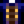

Squid Ink
Jump to navigation
Jump to search
| Squid Ink | |
| Squid use this ink to confuse would-be predators. | |
| Information | |
| Source | |
| Energy | Inedible |
| Sell Price | |
Squid Ink is an item which is dropped from Squid Kids in the Mines and Blue Squids in the Dangerous Mines. It can also be produced by Squids and Midnight Squids in Fish Ponds. Elliott sells five Squid Inks in his shop at the Desert Festival for  30 Calico Eggs each. It's used as an ingredient in clothing dye and tailoring.
30 Calico Eggs each. It's used as an ingredient in clothing dye and tailoring.
It cannot be sold to the Adventurer's Guild. However, it can be sold to Willy at his Fish Shop. It must be shipped to complete the Shipping Collection.
Gifting
| Villager Reactions
| |
|---|---|
| Love | |
| Neutral | |
Bundles
Squid Ink is one of the options for the  Fish Farmer's Bundle in the Pantry (Remixed).
Fish Farmer's Bundle in the Pantry (Remixed).
Recipes
| Image | Name | Description | Ingredients | Energy / Health | Buff(s) | Buff Duration | Recipe Source(s) | Sell Price |
|---|---|---|---|---|---|---|---|---|
| Seafoam Pudding | This briny pudding will really get you into the maritime mindset! | |||||||
| Squid Ink Ravioli | Temporarily protects from debuffs. | Ravioli Buff) |
Tailoring
Squid Ink is used in the spool of the Sewing Machine to create the Midnight Dog Jacket. 
Quests
Squid Ink is not used in any quests.
History
- 1.4: Introduced.
- 1.5: Is now used in a remixed bundle. Can now be dropped by Blue Squids. Elliott now loves Squid Ink as a gift. Added Squid Ink Ravioli recipe.
- 1.6: Can now be purchased from Elliott at the Desert Festival.